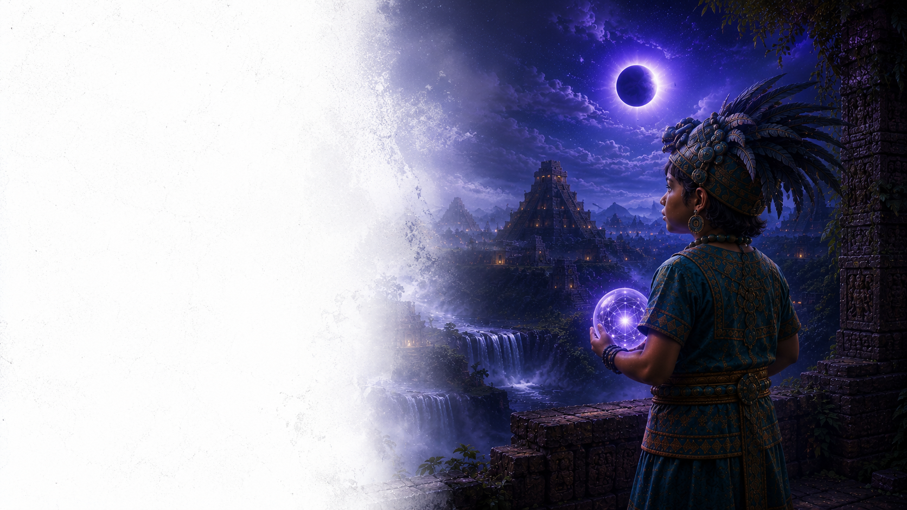
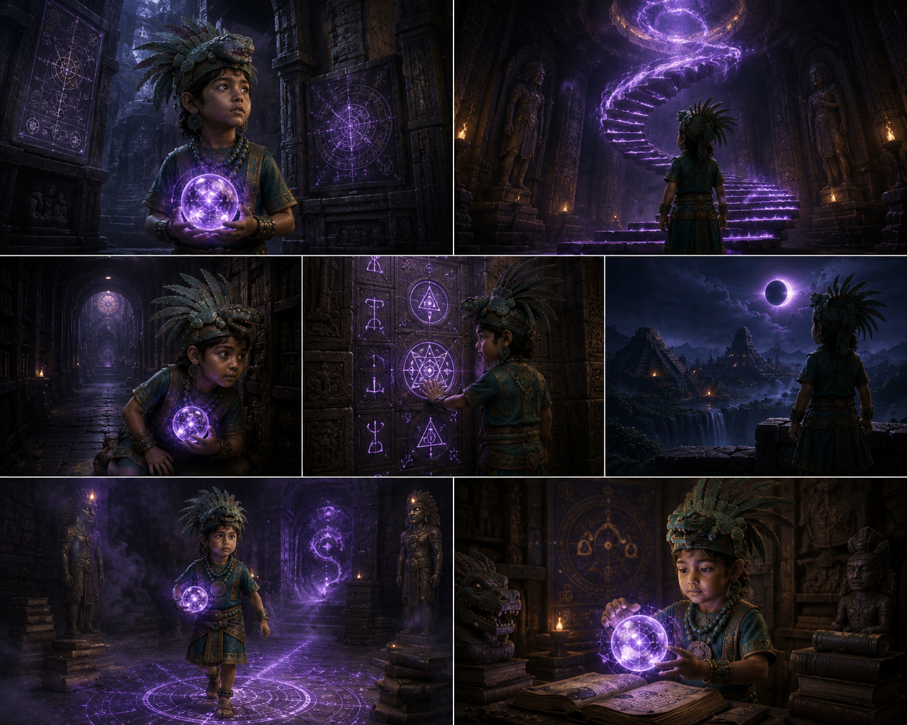
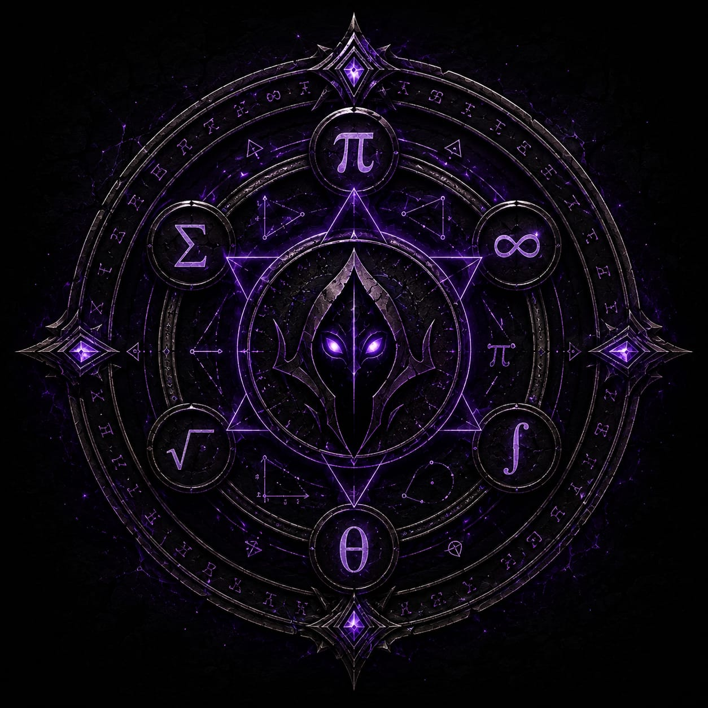
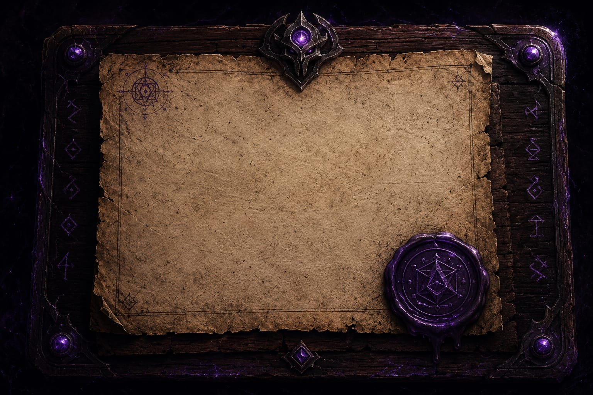
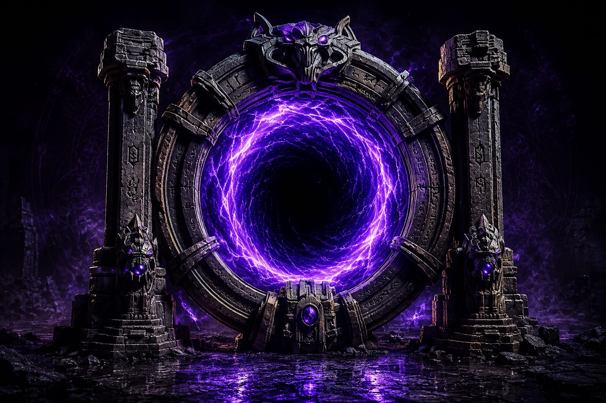
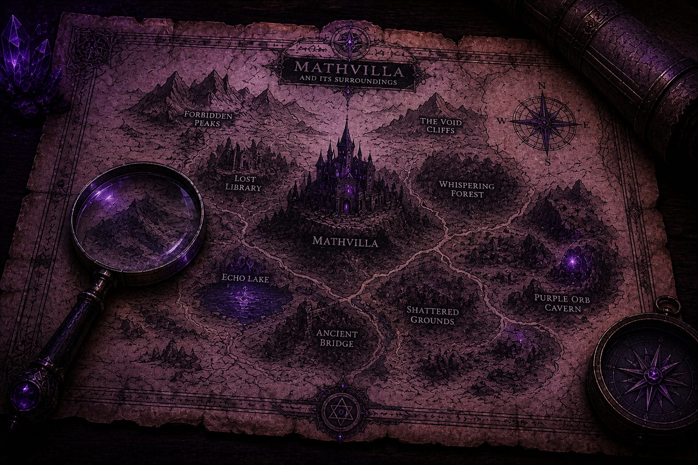
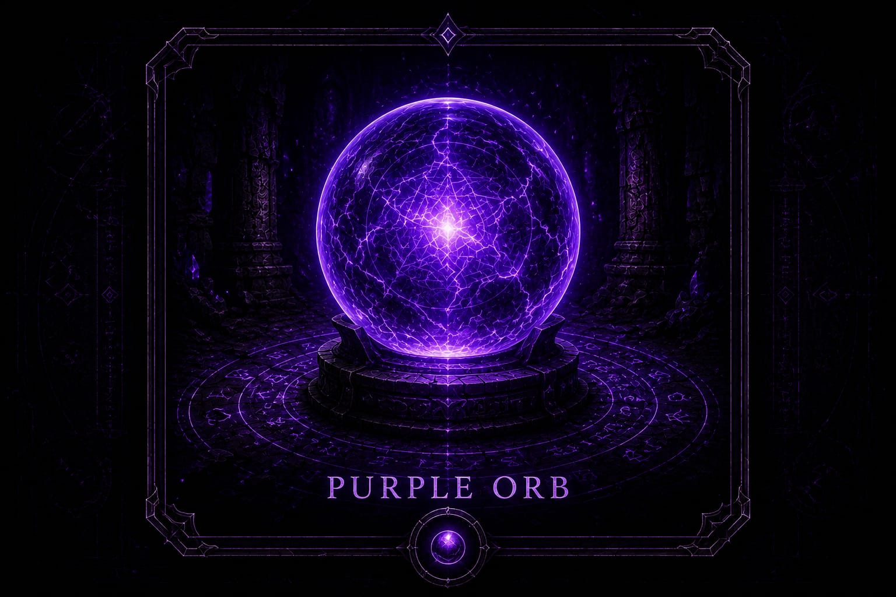

GANITH
THE ARCHIVIST OF THE HIDDEN
He runs. He hides. He holds the purple orb.
Who is Ganith? Why is he being chased?
What secrets does he protect?
Some truths are locked.
Some are not meant to be known... yet.
Paths Hidden in Ganith's Trail
Every clue around Ganith belongs to a larger pattern: symbols, rule fragments, relics, and events that quietly connect the book, the game, and the mystery of the purple orb.

Lore Entries
Fragments of Ganith's story, book-part content, descriptions, and hidden warnings.
Open Archive
Symbols
Introductions, meanings, and story connections for signs that appear in Ganith's path.
Read Symbols
Manuscript
Rules, hints, warnings, and hidden instructions carried inside the story.
Open Manuscript
Timeline
The thirteen-second sequence arranged as events, signals, and consequences.
View Timeline
Locations
Villa map areas, hidden paths, and future protagonist routes with attached details.
Open Locations
Purple Orb
The mystery object itself: its role, magic, origin pressure, and connection to Ganith.
Trace the OrbTHE LEGEND BEGINS
The Child of Paradox
Ganith is a wisp of paradox, a spectral child born of the same ancient wisdom that shaped the stones of Chichen Itza. In the Mayan world, where the feathered serpent Kulkulkan soared between earth and sky, Ganith drifts like a phantom along unseen currents of cosmic order. The Mayan civilization, with its celestial rhythms and astonishing understanding of mathematics, gave birth to a logic so precise that even time seemed to bow before it.
Across this dreamscape, Ganith becomes both problem and solution—a riddle woven into the same patterns that once measured the cosmos. Like the feathered serpent, Ganith glides between worlds, embodying chaos in one moment and perfect clarity in the next, always remaining just beyond human understanding.
Now, as Ansh steps into a crumbling chamber, Ganith calls to him—a fleeting shadow that awakens a relentless countdown of thirteen seconds. A playful laugh echoes through the ruins as ancient walls collapse, leaving behind only a single fragile relic, an artifact placed like a breadcrumb for those brave enough to continue the journey.
In every shattered ruin lies another beginning. Like a fractal spiral, Ganith dismantles worlds only to reveal hidden pathways beneath them. Every equation conceals another map, every smile hides another silent doorway, and every ending quietly prepares the next mystery.
There is no single answer to Ganith. The paradox exists not to be defeated, but to awaken curiosity. Beyond every puzzle waits another horizon, challenging those who dare to step beyond certainty and discover what lies beneath the visible world.
Hidden beneath every mystery is a truth waiting for the one who refuses to stop searching. Ganith is not merely a guide or an illusion, but the living bridge between mathematics and imagination—a reminder that every number carries a story, every pattern conceals a secret, and every question opens the door to another universe.
"As every number holds a universe, so Ganit is the song that awakens it—beyond destruction, a hidden harmony waiting to bloom."
The Descending Serpent
The Temple of Kukulkan at Chichén Itzá was designed with extraordinary precision. During the spring and autumn equinoxes, sunlight and shadow unite to create the illusion of a giant serpent descending the staircase.
It is not sorcery. It is geometry. Architecture. Astronomy. Time. Four disciplines working together to create one unforgettable moment.
"Humans call it magic because they cannot see the mathematics." — Ganith